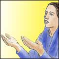
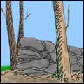

3 items in 2 author sections:
Spinks, Mark P. |
|  | March 11, 2003 | |
| The Handmaid of the Lord | Mark P. Spinks, 1998 | Obedience | |
Now a handmaid's position in life is a very humble position.... they're the folks that are around to do whatever the mistress says to do.... It's not that she does great, big tasks all the time; it's the little things—I'm here; I'm ready for service; I'm at hand. | ||
Wilson, Ostis B. |
 |
April 24, 2004 | |
| Courtship and Marriage | Ostis B. Wilson, 1976 | Marriage | |
Marriage is a lifetime thing.... It should never be entered into thoughtlessly, recklessly, or hastily; but thoughtfully, prayerfully, reverently, discreetly, and in full consideration of the purposes for which God ordained it. | ||
|  | February 1, 2003 | |
| Remove Not the Ancient Landmarks | Ostis B. Wilson | Compromise | |
There has been a great cry... for liberty of conscience. But let us realize that this tendency generally runs into a liberal conscience, and there is a vast difference between a liberal conscience and liberty of conscience. | ||